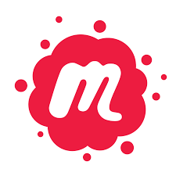

Networking in Seattle
I returned home to Seattle from Zambia and rapidly jumped into the school year Chairing the English department and teaching 5 sections of 8th-grade Literature and Identity classes. But I knew that I needed to find a way to somehow fuel my new coding passion. Based on the recommendations of the Science and Math teachers at my school, I found Codecademy. I worked through an HTML/CSS course to build on what I had begun learning in Zambia. It felt good to review that material before diving into anything else.
Impulsively, I signed up for a Meetup I found online intended for “Coders in Seattle”. It was attended by thirty or so 40-50-year-old mostly white men… and myself. I thought back, recognized a pattern, and acknowledged the fact that the programming teachers at my school also fit the same exact build and makeup.
The thing is, as a girl who grew up playing ice hockey in Chicago, I identify as someone who is comfortable in a male dominated space. But this felt different. I felt a terrible sense of imposter syndrome. Was I welcome there? Did I know what I was getting myself into? Sure, I know how to check a guy twice my size into the boards to steal a puck, but this intellectual warfare would be different. I needed to develop and build foundational coding knowledge before I could feel fully confident engaging in conversations in settings such as this.
And that’s when my research brought me to the amazing community that supports women in tech in Seattle. I discovered the many resources and Meetups dedicated to supporting and encouraging women in the coding/tech world. I signed up for almost every event and group I could find that had “women” or “tech” in the title. My friends and fiancé did not see me for what felt like weeks at a time because I began averaging five Meetups a week! Luckily, they’re all amazingly supportive of my dream and I was having the time of my life meeting so many inspirational and powerful women in the industry. Sharing with them my interest in breaking into this world was hopeful and informative. I started to recognize a few faces at each event and felt myself becoming more comfortable and confident as I engaged in discussions with other liked minded women. This world was new and unfamiliar, but I felt welcomed.
I was carving out a place for myself in this community and it felt empowering to feel as though I belong.